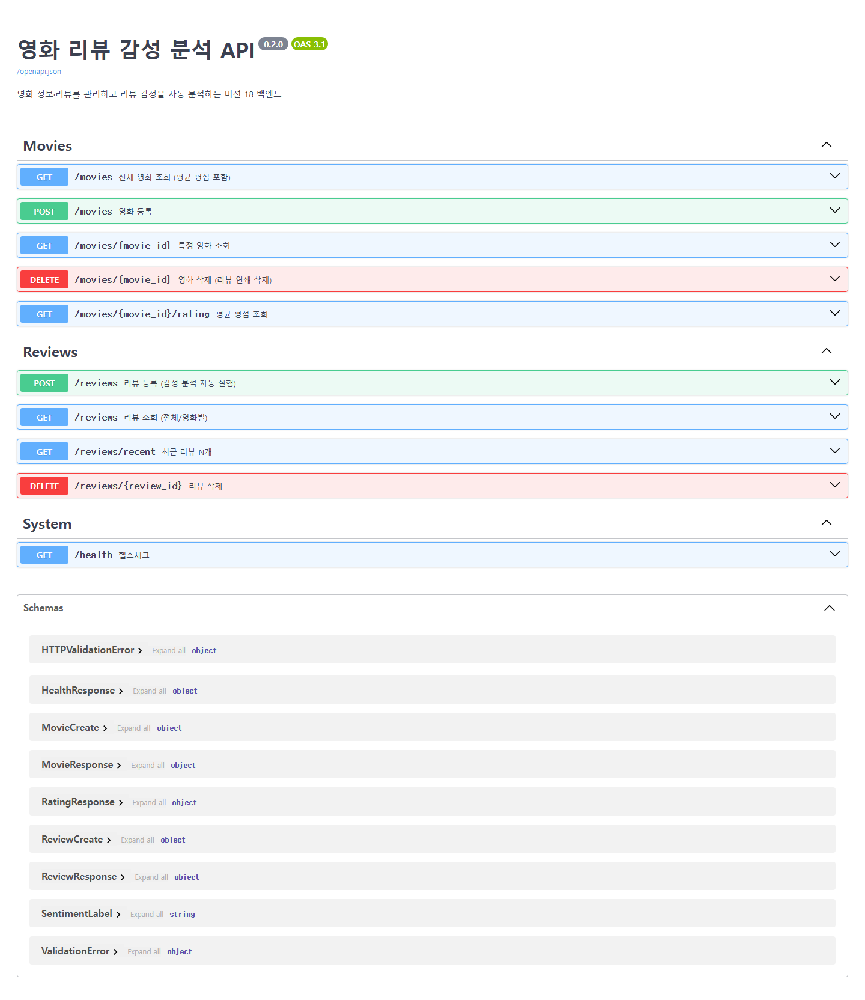
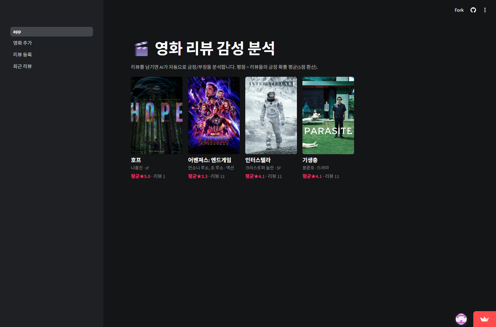
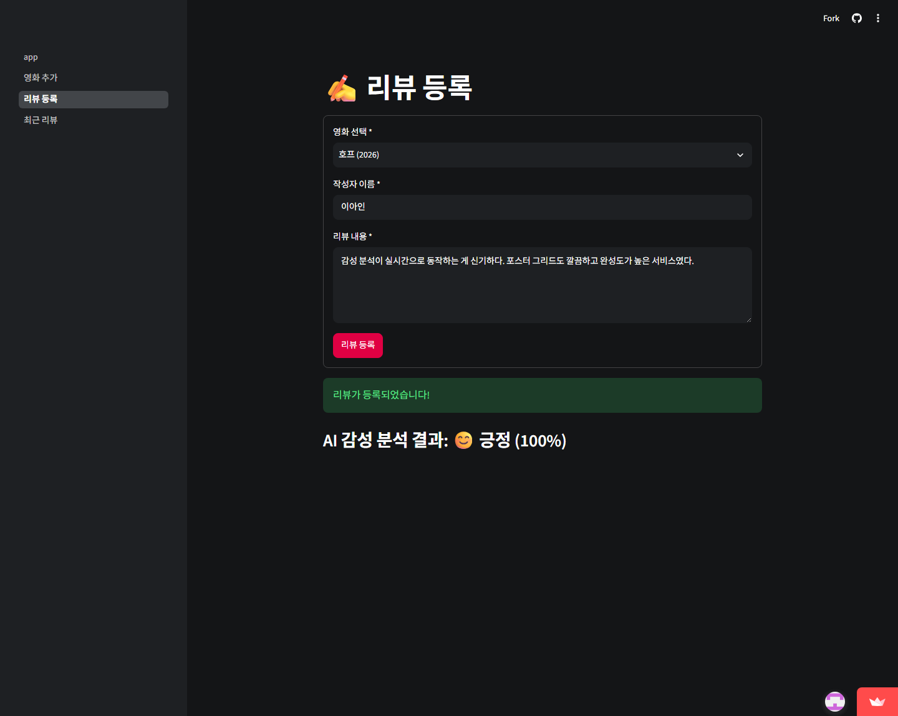
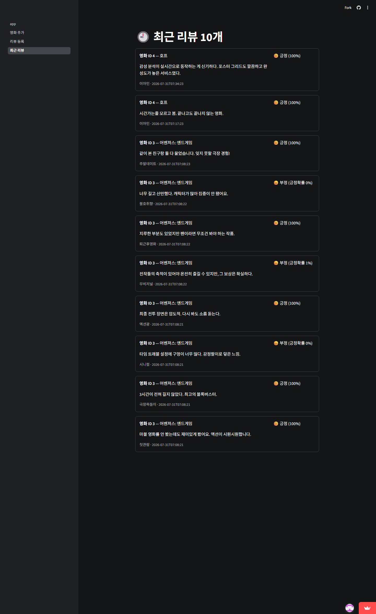

영화 정보와 사용자 리뷰를 관리하고, 리뷰가 등록되는 즉시 한국어 감성 분석 모델이 긍정/부정을 판별해 저장하는 웹 서비스다. 영화별 평점은 별도 입력값이 아니라 리뷰들의 긍정 확률 평균을 5점 만점으로 환산해 산출한다. 모든 데이터는 백엔드가 소유하며, 프론트엔드는 HTTP API로만 통신한다.
| 구분 | 선택 | 비고 |
|---|---|---|
| 프론트엔드 | Streamlit (멀티페이지 4개) | Streamlit Cloud 배포 |
| 백엔드 | FastAPI + Uvicorn | Docker 컨테이너 → GCP Cloud Run(서울) 배포 |
| 데이터베이스 | SQLite | 영화 1 : N 리뷰, FK CASCADE |
| 감성 분석 | KoELECTRA-Small-v3 (NSMC 파인튜닝) | ONNX INT8 양자화, 14MB로 서빙 |
관심사를 세 계층으로 나눴다. 화면은 그리기만 하고, 검증과 판단은 백엔드가, 추론은 모델 계층이 맡는다.
[사용자 브라우저]
│
┌──────▼───────────────────────┐
│ Streamlit Cloud (프론트엔드) │ app.py 영화 그리드 · 영화 추가 · 리뷰 등록 · 최근 리뷰
│ movie-review-sentiment-ain │ st.secrets로 백엔드 주소 주입 (코드 수정 없이 환경 전환)
└──────│───────────────────────┘
│ HTTPS / JSON
┌──────▼───────────────────────┐
│ GCP Cloud Run 서울 (백엔드) │ FastAPI
│ routers HTTP 계층 (경로·상태코드·404) │
│ schemas Pydantic 검증 — 신뢰의 경계 │
│ services 비즈니스 로직 (프레임워크 무관 순수 Python)│
│ ml ONNX Runtime 감성 분석 (INT8, 14MB) │
│ SQLite movies · reviews │
└──────────────────────────────┘
POST /reviews 호출run_in_threadpool로 스레드 풀에 위임 — 이벤트 루프가 다른 요청을 계속 처리lifespan에서 1회만 로드한다. 요청마다 로드하면 건당 1초 이상
걸리는 구조가 되므로, 로드 시점을 구조적으로 고정했다. /health가 모델 로드 여부까지
반환하며, 이 값이 Docker HEALTHCHECK와 프론트엔드 연결 확인의 근거가 된다.
┌─ movies ──────────────────┐ ┌─ reviews ──────────────────────┐
│ id INTEGER PK │ │ id INTEGER PK │
│ title TEXT NN │ 1 N │ movie_id INTEGER FK NN ─┼─▶ movies.id
│ release_date TEXT NN │──────────│ ON DELETE CASCADE
│ director TEXT NN │ │ author TEXT NN │
│ genre TEXT NN │ │ content TEXT NN │
│ poster_url TEXT NN │ │ sentiment_label TEXT NN │ positive | negative
│ created_at TEXT NN │ │ sentiment_score REAL NN │ 긍정 확률 0.0~1.0
└───────────────────────────┘ │ created_at TEXT NN │
└────────────────────────────────┘
설계에서 의도한 점은 두 가지다.
AVG(sentiment_score)로 집계한다.
리뷰 등록·삭제 때마다 갱신하는 방식은 하나만 놓쳐도 정합성이 깨지는데, 파생값을 저장하지 않으면
어긋날 데이터 자체가 없다.모든 쿼리는 파라미터화 쿼리(? 플레이스홀더)만 사용해 SQL 인젝션을 차단했고,
SQLite의 FK 제약은 기본 비활성이므로 연결마다 PRAGMA foreign_keys=ON을 적용했다.
| 메서드 | 경로 | 기능 | 실패 응답 |
|---|---|---|---|
| POST | /movies | 영화 등록 | 422 |
| GET | /movies | 전체 영화 (평균 평점·리뷰 수 포함) | — |
| GET | /movies/{id} | 영화 단건 조회 | 404 |
| DELETE | /movies/{id} | 영화 삭제 — 리뷰 연쇄 삭제 (심화) | 404 |
| GET | /movies/{id}/rating | 평균 평점 (감성 점수 평균) | 404 |
| POST | /reviews | 리뷰 등록 + 감성 분석 자동 실행 | 404·422 |
| GET | /reviews | 리뷰 조회 (movie_id 필터, limit) | 422 |
| GET | /reviews/recent | 최근 리뷰 (기본 10건) | — |
| DELETE | /reviews/{id} | 리뷰 삭제 (심화) | 404 |
| GET | /health | 서버·모델 로드 상태 | — |
모든 엔드포인트에 response_model과 설명을 명시해 Swagger 문서가 곧 API 명세가 되도록 했다.
감성 라벨은 Enum으로 제한해 오타 라벨이 저장·응답될 가능성을 타입 수준에서 막았다.

선정 기준은 세 가지였다. 영화 리뷰 도메인 적합성, CPU 서빙 가능한 크기, 경량화 파이프라인 호환성.
| 후보 | 크기 | 판단 |
|---|---|---|
| daekeun-ml/koelectra-small-v3-nsmc | 14M | 채택. NSMC(네이버 영화 리뷰 15만 건) 파인튜닝이라 서비스 도메인과 정확히 일치, 추가 학습 불필요. base 대비 1/8 크기로 모델 선택 자체가 1차 경량화 |
| koelectra-base-finetuned-nsmc | 110M | 정확도 소폭 우위 예상되나 8배 크고, 과제 규모에서 체감 차이 미미 |
| KcELECTRA-base | 110M | 사전학습 모델이라 직접 파인튜닝 필요 — 과제 범위 초과 |
| LLM API | — | 외부 종속·비용, 경량화 요구사항과 상충 |
"낮은 복잡도부터 적용하고, 요구 미달 신호가 있을 때만 다음 단계로 간다"는 기준을 세웠다. 1단계 ONNX 변환(정확도 손실 0), 2단계 동적 양자화(INT8), 3단계 QAT는 정확도가 무너질 때만 — 실측 결과 3단계는 필요 없었다.
측정은 워밍업 10회를 버린 뒤 100회 반복, 토크나이즈부터 후처리까지 전 구간(E2E) 기준이다. 정확도는 라벨링한 검증 문장 16개로 확인했다.
| 엔진 | 평균 지연 (ms) | 표준편차 | P99 (ms) | 정확도 | 모델 크기 (MB) |
|---|---|---|---|---|---|
| PyTorch FP32 | 27.6 | 3.8 | 39.5 | 16/16 | 53.9 |
| ONNX FP32 | 49.7 | 10.9 | 76.2 | 16/16 | 54.1 |
| ONNX INT8 | 45.8 | 17.7 | 89.7 | 16/16 | 14.0 |
예상과 다른 결과가 나왔다. 통상 ONNX 변환은 그래프 최적화로 속도가 개선된다고 알려져 있으나, 측정 환경(로컬 CPU)에서는 PyTorch가 오히려 1.8배 빨랐다. 최근 PyTorch의 CPU 어텐션 커널이 이미 고도로 최적화되어 있고, 해당 CPU에서 INT8 행렬곱 가속 이득보다 동적 양자화의 실시간 범위 계산 오버헤드가 큰 것으로 추정한다. 교재가 경고한 "INT8 성능 역전"이 실제로 재현된 사례이며, 경량화 기법은 적용 전 반드시 대상 하드웨어에서 실측해야 한다는 결론을 얻었다.
속도만 보면 PyTorch지만, 최종 선택은 ONNX INT8이다. 판단 기준을 지연시간 단일 지표가 아니라 서빙 총비용으로 잡았기 때문이다.
| 기준 | PyTorch 서빙 | ONNX INT8 서빙 |
|---|---|---|
| 추론 의존성 | torch 전체 (수 GB) | onnxruntime + tokenizers (수십 MB) |
| Docker 이미지 | 수 GB | 488MB (실측) |
| 모델 파일 | 54MB | 14MB |
| 요청당 지연 | 약 28ms | 약 46ms |
| 정확도 | 동일 (검증 16문장 판정 완전 일치) | |
리뷰 한 건당 추론 1회에서 18ms 차이는 사용자가 감지할 수 없는 반면, 이미지 크기는 배포 시간과 Cloud Run 콜드 스타트에 직결된다. 손해 지표가 요구사항 안이고 이득이 크므로 INT8을 채택했다.
통합 테스트 중 백엔드 기동이 48~80초 걸리는 문제를 발견했다. 임포트 구간별 측정 결과
transformers 라이브러리 임포트와 AutoTokenizer 로드가 15초 이상(콜드 상태에서는 수십 초)을
차지했다. 토크나이저의 실체는 tokenizer.json 파일 하나이므로, 이를 경량 tokenizers
라이브러리로 직접 읽도록 교체했다. 교체 전후 토큰 ID가 완전히 일치함을 확인했고, 기동 시간은
4.8초로 줄었다. 서빙 의존성에서 transformers가 빠지면서 Docker 이미지 경량화에도 기여했다.
컨테이너 실측으로는 기동 후 6초 만에 HEALTHCHECK가 healthy로 전환된다.
Streamlit 멀티페이지 4개로 구성했다. Streamlit은 위젯 조작마다 스크립트 전체를 재실행하는 모델이므로, 이에 맞춰 세 가지를 적용했다.
@st.cache_data(ttl=30)으로 재사용하고,
등록 성공 직후 캐시를 비워 "등록했는데 안 보이는" 문제를 막았다./health를 확인하고, 실패 시 안내 문구와 함께
st.stop()으로 렌더링을 중단한다. 모델 미로드 상태까지 구분해 표시한다.영화 목록은 다크 테마의 6열 포스터 그리드로 구성했다(포스터 비율 2:3 고정, 평점은 강조색 별점). HTML 렌더링 구간에는 제목 등 사용자 입력을 전부 이스케이프해 XSS를 차단했으며, 악성 스크립트 제목을 실제로 등록해 이스케이프되는지 자동 테스트로 검증했다.



| 구성요소 | 플랫폼 | 주소 |
|---|---|---|
| 프론트엔드 | Streamlit Cloud | movie-review-sentiment-ain.streamlit.app |
| 백엔드 | GCP Cloud Run (asia-northeast3) | mission18-backend-277538807045.asia-northeast3.run.app |
| 이미지 저장소 | Artifact Registry (서울) | 488MB, python:3.11-slim 기반 |
백엔드 Dockerfile에는 레이어 캐시 최적화(의존성 설치를 코드 복사보다 앞에), 비root 실행,
Exec 형식 CMD(시그널 전달), 그리고 프로세스 생존이 아닌 모델 로드 완료를 확인하는
HEALTHCHECK를 적용했다. 로컬 통합 실행용 Docker Compose에서는 이 HEALTHCHECK를
condition: service_healthy와 연결해, 모델 로드가 끝난 뒤에만 프론트엔드가 기동하도록 했다.
프론트엔드는 GitHub 저장소 연동으로 배포했고, 백엔드 주소는 코드가 아니라 Streamlit Cloud의 Secrets로 주입한다. 로컬과 클라우드가 같은 코드로 동작하며, main 브랜치에 push하면 1분 내 자동 재배포된다.
| 한계 | 원인 | 개선 방향 |
|---|---|---|
| Cloud Run에서 데이터 휘발 | SQLite가 인스턴스 로컬 파일이라 인스턴스 재생성 시 초기화 | Cloud SQL 등 관리형 DB로 이전. 현 단계는 시드 스크립트로 즉시 재현 가능 |
| 혼합 감정 문장 오분류 | 시드 33건 중 "지루했지만 팬이라면 볼 만하다"류 문장이 부정으로 판정. NSMC가 이진 라벨이라 양가적 표현에 약함 | 중립 클래스 포함 3-class 모델 도입 또는 확신도 임계값 기반 "판정 유보" 표기 |
| INT8 지연시간 열위 (해당 환경) | 측정 CPU에서 INT8 가속 이득보다 동적 양자화 오버헤드가 큼 | 배포 대상 CPU에서 재측정 후 엔진 선택. FP32 ONNX 폴백 경로 확보됨 |
| 동시 쓰기 처리량 | SQLite 단일 파일 잠금 특성 | 과제 규모에서는 문제없음(동시 12요청 실측 통과). 규모 확대 시 DB 이전과 함께 해소 |
# 백엔드 # 프론트엔드 (새 터미널) cd backend cd frontend pip install -r requirements.txt pip install -r requirements.txt uvicorn app.main:app --port 8000 streamlit run app.py python scripts/seed_db.py # http://localhost:8501 # 테스트: backend/tests/test_movies.py · test_reviews.py, frontend/tests/test_pages.py # 모델 재생성: backend/scripts/export_onnx.py → benchmark.py (torch·transformers 필요) # 통합 실행: docker compose up --build